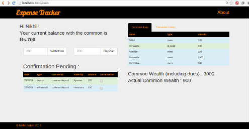

Expense Tracker (in development)
A web app built on NodeJS using a MongoDB database for people to track expenses. It's mainly for groups of people who share a common pool of money to keep track of how much is spent on what and by whom. Will include transaction history, verification, capabilities of common accounts.